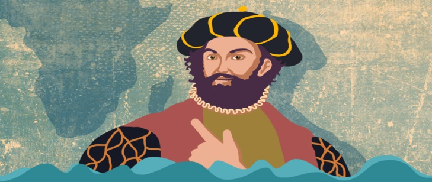
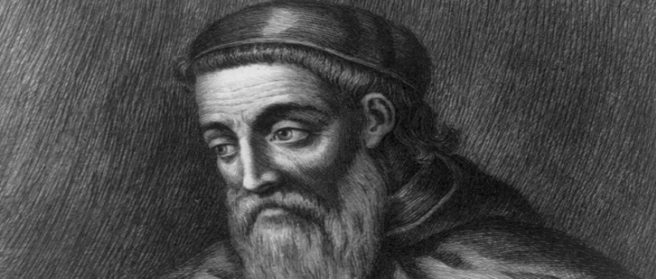

Vasco Da Gama
Portugál felfedező, az 1460-as években született Sinesben.
Ő volt az első európai, aki tengeri útvonalon eljutott Indiába.
Az ő nevéhez kapcsolódik sok tengeri útvonal felfedezése is.
Fontos szerepe volt Európa gyarmatosításában.
Kolombusz Kristóf
Spanyolország támogatásával indult útnak
Véletlenül 1492-ben felfedezték Amerikát, de elsőnek Új Világnak nevezték
Jelentős hatással voltak az Európai gyarmatosításnak
hatalmas gazdasági, politikai és kulturális változásokat indított el
Kolumbusz nem tudta hogy egy új kontinenset fedezett fel, csak majdnem 15 évvel később jöttek rá

Amerigo Vespucci
Jelentős szerepet játszott az Amerika felfedezésében
Felfedezte az amerikai kontinens jelentős részeit.
Első útja 1497 Spanyolokkal az Atlanti-óceánon
Ezután több expedicíó melyek során részletes térképet készített az Újvilágról
Waldseemüller, a német kartográfus, 1507-ben nevezte el Amerikának Vespucci neve után
Vespucci leírásai és térképei alapján felismerték, hogy az Újvilág egy új kontinens.

{kind=link}